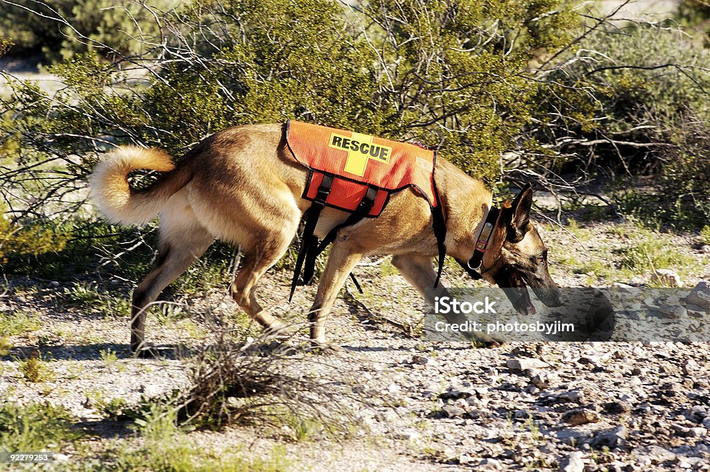
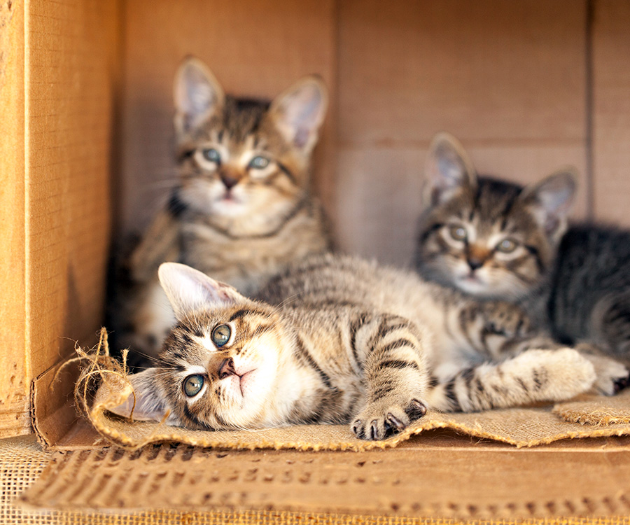

Adopción responsable
Publicado el 15 de mayo de 2026 · Por equipo AdoptaPet
Rescatamos gatos de la calle, los cuidamos y los conectamos con familias responsables. Ya entregamos más de 150 gatos en adopción desde 2020.
El proceso incluye chequeo veterinario, vacunación, castración y seguimiento post-adopción durante los primeros seis meses. Queremos asegurarnos de que cada gato encuentre un hogar para toda la vida.
Si estás pensando en adoptar, escribinos. Coordinamos una entrevista informal para conocernos y ver qué gato encaja mejor con tu rutina.

Jornadas de castración
Publicado el 28 de abril de 2026 · Por equipo AdoptaPet
Organizamos jornadas gratuitas de castración en distintos barrios. En lo que va del 2026 ya castramos 87 gatos, y trabajamos con veterinarios voluntarios que donan su tiempo.
Coordinamos con centros comunitarios y vecinos para llegar a las colonias felinas más vulnerables. El objetivo este año es alcanzar las 200 castraciones.
Castrar no es solo una decisión sanitaria: es la forma más efectiva de reducir el sufrimiento animal a largo plazo.

Apadrinamiento
Publicado el 10 de marzo de 2026 · Por equipo AdoptaPet
Si no podés adoptar, podés apadrinar un gatito por $800 mensuales. Tu aporte cubre alimentación, atención veterinaria y cuidados básicos.
Ya somos más de 60 padrinos activos. Cada padrino recibe fotos, videos y actualizaciones mensuales de su ahijado.
Es una forma simple de ayudar sin tener que cambiar tu rutina, y de mantener un vínculo con un gato que necesita cariño y soporte.